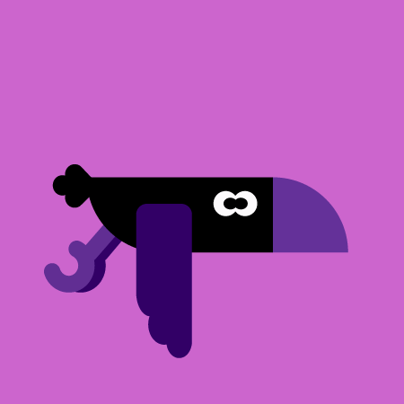
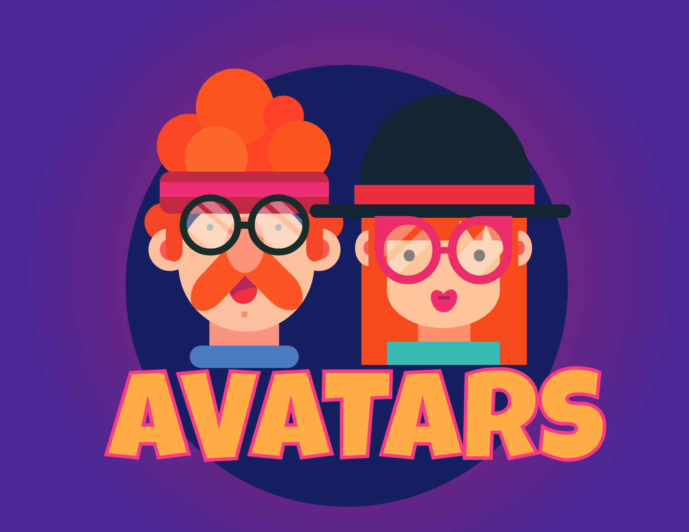
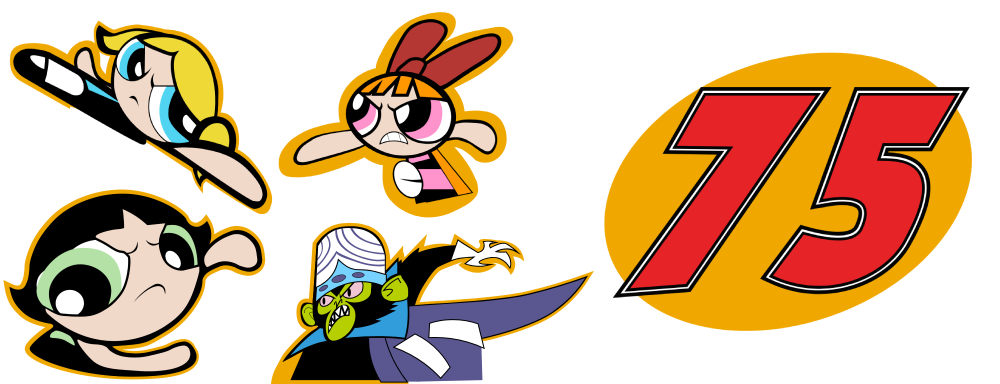
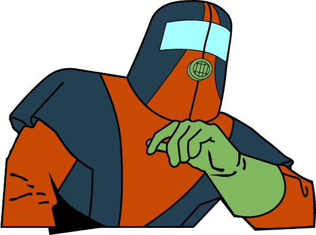
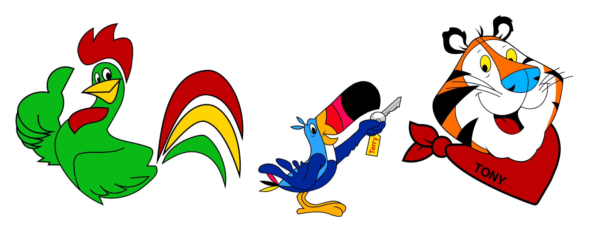

Welcome to my Illustrator Page. Here you'll find severel of my completed Vector Projects that I worked not just on my free time, but some Vectors I worked for class assignments.

It's a bird I made on Illustrator as an assignment.

Some Avatars and gradients created with Illustrator.
A dentist logo made aerly on to gain some experience with Illustrator. Too bad it took 2 years to actually click with Illustrator.

My 1st proper tackle into a Vector Set and it's the classic Powerpuff Girls Trio, their archnemeis, Mojo Jojo, and the special variation of the #75 that was used in the real life scheme. These 4 Vectors were created as part of a project recreating Wally Dallenbach's real life Powerpuff Girls paint scheme, which run in the 2000 Daytona 500.
If you've noticed, all of these include portions that are "incomplete." This is because most of the time, character art from this time period are cropped by parts of the real life car and not cropped in official Diecast Boxes. But not in this instance, so they feature parts that are covered up later by parts of the car itself.

Another vector for another paint scheme, this time it features the classic Adult Swim character, Moltar. Specifically, the Coast to Coast version from the mid 1990s and early Toonami. Just like the PPG vectors, this one was created for a Paint Scheme project and the bottom of the vector got covered up in the completed version.

The most recent inclusion to this page, this mini collection of Kellogg's mascots came from my project remaking and remastering various paint schemes from the 2002 NASCAR Cup Season. With my experience with Illustrator, it felt right to create Vector versions of the illustrations featured on Terry Labonte's Chevrolet Monte-Carlo.